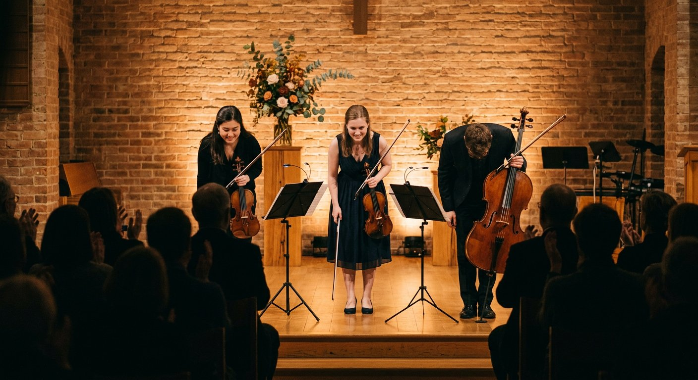
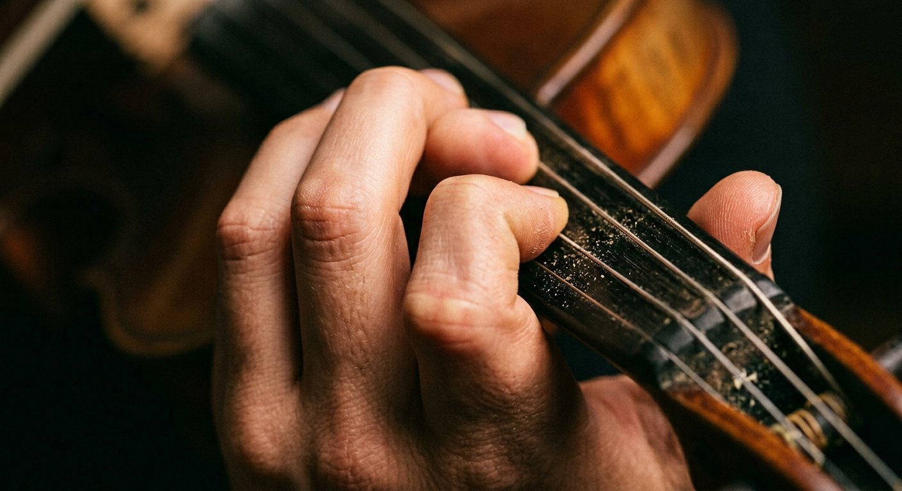
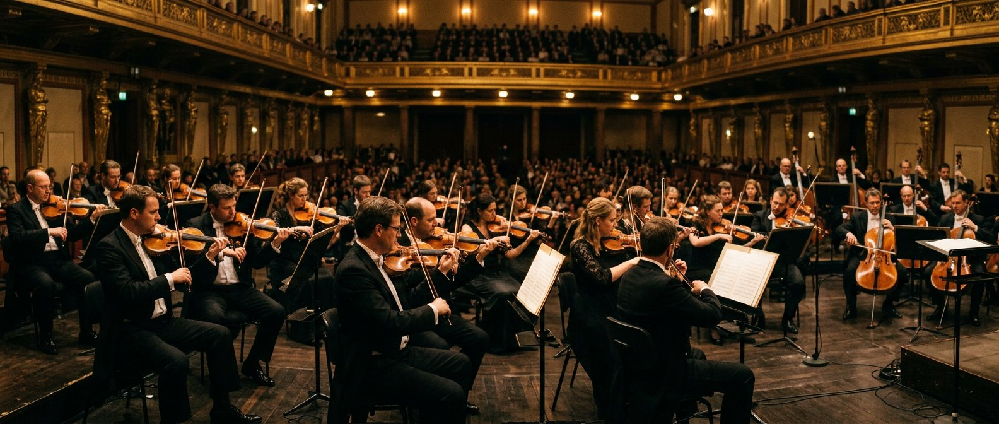
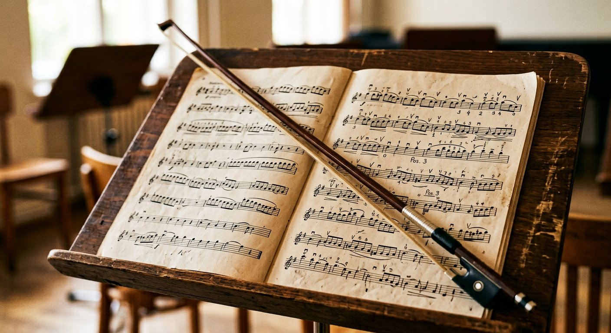
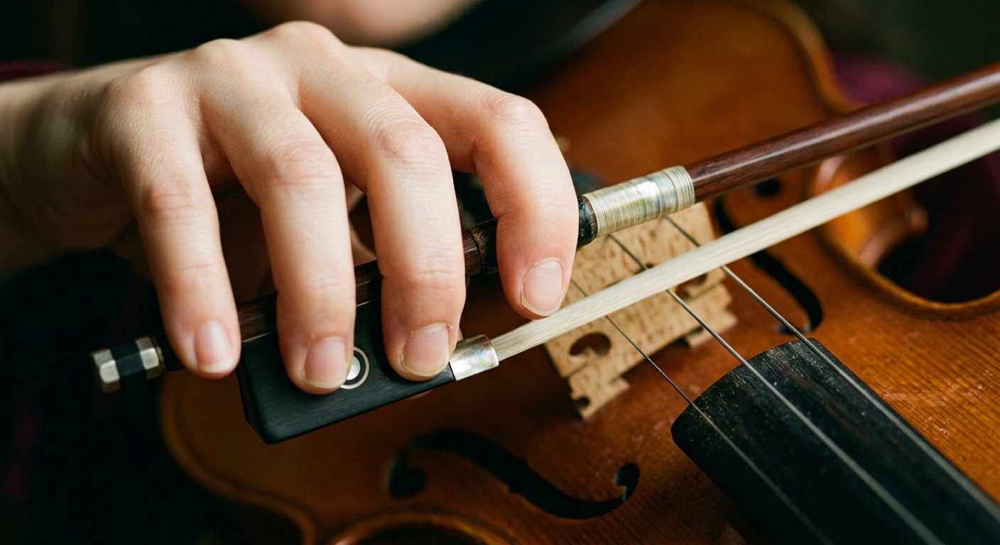

Concerto · with orchestra
Mozart Concerto No. 5
by Jamie Lee — who graduated from the University of Indiana, where she received a full scholarship.
02 / 04

Concerto · with orchestra
by Jamie Lee — who graduated from the University of Indiana, where she received a full scholarship.
Recording · old-time
by Matt Brown — four albums of old-time music released; fiddle, banjo and guitar.

Recital · virtuoso repertoire
Pablo de Sarasate, played by Grace Jo — the Hungarian-tinged showpiece that punishes any insecure left hand.

Group recital
The last movement from Vivaldi's Four Seasons, performed with Richard Amoroso Jr. on viola, students of the studio, and Richard Amoroso Sr. on cello.

Sonata · at Oberlin
Performed at a recital at Oberlin College and Conservatory by Asher — admitted with scholarship to five schools.

Studio reel · 2025
Practice-room clips from current students — the unglamorous half of the results page.
03 / 04
Where they are now
Names appear with the permission of the students and their families.
04 / 04
Your turn
Free guide
What an audition committee hears in the first sixty seconds of your first-round excerpt — eight checkpoints, plus what to do in the practice room about each one.